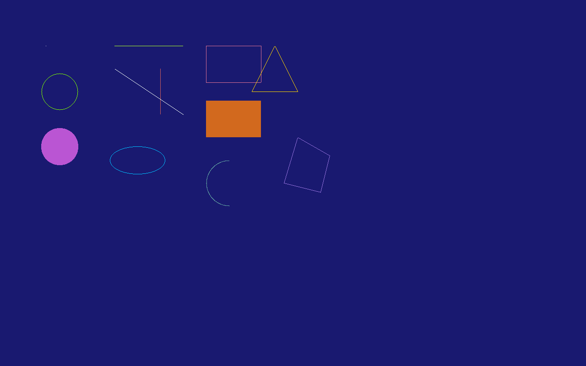
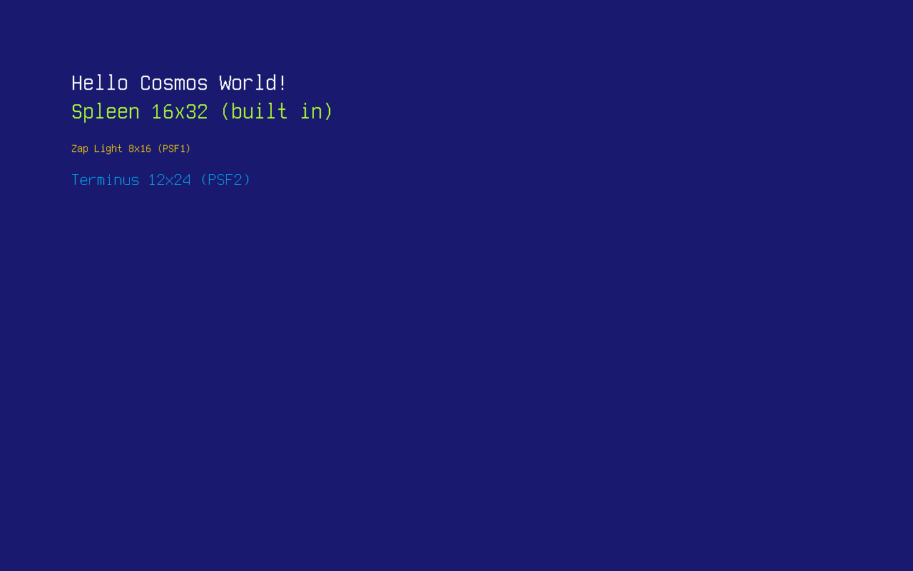
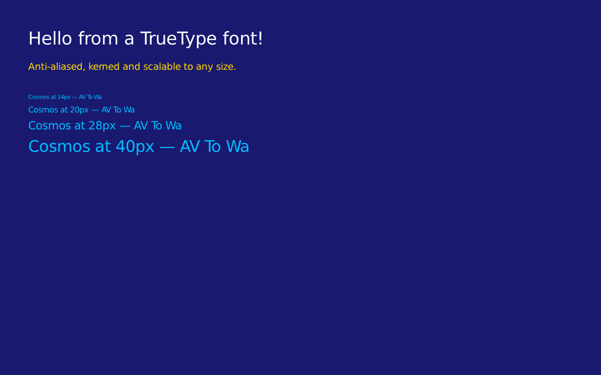

图形
本文将介绍 Cosmos Gen3 上的 Cosmos 图形子系统（Cosmos Graphics Subsystem，CGS）：如何获取一个绘图表面，并在屏幕上绘制形状、文本和图像。CGS 基于画布（Canvas）这一抽象，即一块供你在上面绘图的空白区域。它是一个绘图层，而不是控件工具包：它没有窗口或按钮，但提供了构建它们所需的一切。
如果你从 Gen2 迁移过来，主要区别如下：
| Gen2 | Gen3 | |
|---|---|---|
| 画布 API | Cosmos.System.Graphics |
相同的 API，位于 Cosmos.Kernel.System.Graphics |
| 视频驱动程序 | VBE、VGA、VMWare SVGA II | Limine 移交的固件帧缓冲区（x64 和 ARM64），以及驱动工具包发布的显示驱动程序：virtio-gpu、VMware SVGA II、AMD DCN 3.1.5（Ryzen 7000 和 9000 系列处理器中的 Radeon 显卡）和 Intel 集成显卡（第 2 代至第 14 代 Core 处理器） |
Display() |
在双缓冲驱动程序上必须调用 | 始终必须调用：画布采用双缓冲 |
| 视频模式 | 可在运行时切换 | 在提供 IDisplayModes 的显示设备（VMware SVGA II 适配器）上可切换；否则在启动时固定 |
| 文本控制台 | 独立的 VGA 文本模式 | 渲染在同一个画布上 |
| 颜色 | System.Drawing.Color |
System.Drawing.Color |
如果你发现 bug 或任何异常，请在我们的仓库中提交 issue。
在内核中启用图形
图形支持由一个功能开关控制。请确保内核的 .csproj 没有将其关闭（默认值为 true）：
<PropertyGroup>
<CosmosEnableGraphics>true</CosmosEnableGraphics>
</PropertyGroup>
下面的代码片段依赖以下 using 指令：
using System.Diagnostics;
using System.Drawing;
using System.IO;
using System.Numerics;
using Cosmos.Kernel.System.Graphics;
using Cosmos.Kernel.System.Graphics.Fonts;
using Cosmos.Kernel.System.Graphics.Rendering3D;
using Cosmos.Kernel.System.Input;
获取画布
Canvas.GetFullScreen() 返回驱动工具包找到的主显示设备上的画布：可能是引导加载程序在启动时设置的帧缓冲区，也可能是某个显示驱动程序发布的显示设备。Name 会说明是哪一种，格式为驱动程序名称后接显示设备名称；对于启动帧缓冲区，则为 firmware framebuffer：
Canvas canvas = Canvas.GetFullScreen();
Console.WriteLine("Canvas: " + canvas.Name);
Console.WriteLine("Resolution: " + canvas.Width + "x" + canvas.Height);
Console.WriteLine("Refresh: " + canvas.RefreshRate + " Hz");

开始绘图之前，需要了解四件事：
- 除非显示设备切换模式，否则分辨率在启动时就已固定。 在固件帧缓冲区和 virtio-gpu 上，请求不同的
Mode不会重新编程任何硬件：该请求会被忽略，画布保持显示设备当前所处的分辨率。提供IDisplayModes的显示设备（目前是 VMware SVGA II 适配器）通过Canvas.GetFullScreen(Mode)切换模式；对于显示设备拒绝的模式，该方法会抛出ArgumentOutOfRangeException。无论哪种情况，都请使用canvas.Width和canvas.Height，不要假定某个分辨率。 - 在调用
Display()之前，屏幕上什么都不会出现。 画布采用双缓冲：每次绘图调用都写入后台缓冲区，Display()将完成的帧复制到显示设备的帧缓冲区，并请求显示设备将其刷新（flush）输出。先绘制完整的一帧，再调用一次Display()；这也是让动画不闪烁的方法。 - 在画布之外绘图是安全的。 每个图元都会被裁剪：超出
0..Width-1和0..Height-1范围的像素会被丢弃，跨越边缘的形状会绘制到边缘为止，并且不会抛出任何异常。调用之前无需对坐标进行钳制。 Console与你共享屏幕。 没有独立的文本模式：Console.WriteLine本身就渲染在全屏画布上（并且每次写入都会调用Display()）。一旦开始绘图，就不要再向Console写入：下一次写入会把文本直接画在你的图形上。这也意味着未捕获的异常会打印在你绘制的内容之上；与 Gen2 中屏幕直接冻结不同，这至少能告诉你出了什么问题。
画布会被缓存：在调用 DisableFullScreen() 之前，每次调用 GetFullScreen() 都返回同一个画布。唯一的例外是其显示设备已被撤下的画布（其驱动程序已解除绑定，或某个驱动程序接管适配器后固件显示设备已退役）：Display() 不会向其复制任何内容，下一次调用 GetFullScreen() 或 GetFullScreen(Mode) 会用当前主显示设备上的画布替换它。
绘制形状
画布提供了一组经典图元（点、线、矩形、圆、椭圆、圆弧、三角形和多边形），其中大多数都有描边和填充两种版本：
Canvas canvas = Canvas.GetFullScreen();
canvas.Clear(Color.MidnightBlue);
/* A single point */
canvas.DrawPoint(Color.White, 100, 100);
/* Lines: horizontal, vertical and diagonal */
canvas.DrawLine(Color.GreenYellow, 250, 100, 400, 100);
canvas.DrawLine(Color.IndianRed, 350, 150, 350, 250);
canvas.DrawLine(Color.MintCream, 250, 150, 400, 250);
/* Outlined and filled rectangles */
canvas.DrawRectangle(Color.PaleVioletRed, 450, 100, 120, 80);
canvas.DrawFilledRectangle(Color.Chocolate, 450, 220, 120, 80);
/* Circles and ellipses */
canvas.DrawCircle(Color.Chartreuse, 130, 200, 40);
canvas.DrawFilledCircle(Color.MediumOrchid, 130, 320, 40);
canvas.DrawEllipse(Color.DeepSkyBlue, 300, 350, 60, 30);
/* An arc: angles are in degrees */
canvas.DrawArc(Color.CadetBlue, 500, 400, 50, 50, 90, 270);
/* Triangles and polygons */
canvas.DrawTriangle(Color.Gold, 600, 100, 650, 200, 550, 200);
canvas.DrawPolygon(Color.MediumPurple,
new Point(650, 300), new Point(720, 340), new Point(700, 420), new Point(620, 400));
/* Swap the finished frame to the screen */
canvas.Display();

颜色就是普通的 System.Drawing.Color 值，因此可以使用完整的命名调色板（Color.MidnightBlue、Color.Chartreuse 等）以及 Color.FromArgb(...)。alpha 通道低于 255 的颜色会与画布上已有的像素混合。
绘制文本
文本渲染使用 PSF（PC Screen Font）位图字体，即 Linux 控制台使用的格式，支持 PSF1 和 PSF2 两个版本。系统内置了一款 16x32 的 Spleen 字体，即 PCScreenFont.DefaultFont；PCScreenFont.LoadFont(byte[]) 可在运行时加载任何其他 PSF 字体。
有大量现成的 PSF 字体可供下载：
- Zap Group 的控制台字体：经典的 8x16 PSF1 字体（
zap-light16.psf、zap-vga16.psf）。 - Terminus：提供多种尺寸的 PSF2 字体；大多数 Linux 发行版已在
/usr/share/consolefonts/下以.psf.gz文件的形式附带它（请先用gunzip解压，内核读取的是未压缩的.psf）。 - Spleen：PSF2 版本，尺寸从 5x8 到 32x64。
字体只是一个文件，因此最简单的分发方式是将其放在文件系统一文中的 FAT 磁盘上。这里 zap16.psf 是 Zap Light（PSF1），term24.psf 是 Terminus 12x24（PSF2），它们以适合 FAT 的文件名复制到了磁盘上：
Canvas canvas = Canvas.GetFullScreen();
canvas.Clear(Color.MidnightBlue);
/* The built-in 16x32 font */
Font font = PCScreenFont.DefaultFont;
canvas.DrawString("Hello Cosmos World!", font, Color.White, 100, 100);
canvas.DrawString("Spleen " + font.Width + "x" + font.Height + " (built in)",
font, Color.GreenYellow, 100, 140);
/* Load a PSF1 font from the mounted disk... */
Font zap = PCScreenFont.LoadFont(File.ReadAllBytes("/mnt/zap16.psf"));
canvas.DrawString("Zap Light " + zap.Width + "x" + zap.Height + " (PSF1)",
zap, Color.Gold, 100, 200);
/* ...and a PSF2 font */
Font terminus = PCScreenFont.LoadFont(File.ReadAllBytes("/mnt/term24.psf"));
canvas.DrawString("Terminus " + terminus.Width + "x" + terminus.Height + " (PSF2)",
terminus, Color.DeepSkyBlue, 100, 240);
canvas.Display();

TrueType 字体
PSF 字体是位图：只有一种尺寸、一个字符单元，没有曲线。若要实现真正的排版，TrueTypeFont 类可以加载 .ttf 文件，并以任意像素尺寸将其光栅化，支持抗锯齿边缘、逐字形宽度和字偶距调整（kerning）。解析器和光栅化器都是纯托管代码（参见致谢页面），因此格式错误的字体文件会抛出异常，而不会破坏内存。
TrueTypeFont 派生自 Font，因此凡是能用位图字体的地方都能用它：传给普通的 DrawString 重载时，它以自身的 SizePx（在构造函数中设置，默认为 16）绘制。专用重载显式接收尺寸，并且每个（字符，尺寸）组合只光栅化一次并缓存，因此再次绘制相同文本的开销很低：
Canvas canvas = Canvas.GetFullScreen();
canvas.Clear(Color.MidnightBlue);
/* Load a TrueType font from the mounted disk */
TrueTypeFont dejavu = new TrueTypeFont("/mnt/font.ttf");
canvas.DrawString("Hello from a TrueType font!", dejavu, 44, Color.White, 60, 60);
canvas.DrawString("Anti-aliased, kerned and scalable to any size.", dejavu, 24, Color.Gold, 60, 130);
/* One font file, any size */
int y = 200;
foreach (int size in new[] { 14, 20, 28, 40 })
{
canvas.DrawString("Cosmos at " + size + "px - AV To Wa", dejavu, size, Color.DeepSkyBlue, 60, y);
y += dejavu.GetLineHeight(size) + 10;
}
canvas.Display();

传入的 (x, y) 是文本行的左上角，与 PSF 重载相同。用于布局时，MeasureString(text, size) 返回字符串将占用的宽度，GetLineHeight(size) 返回两行顶部之间的距离，GetLineMetrics(size, out ascent, out descent, out lineGap) 返回底层的基线度量。字偶距来自字体中旧式的 kern 表；仅提供 GPOS 字偶距的字体仍然可以渲染，只是没有字对调整。
绘制图像
图像由 Bitmap 类表示。你可以在代码中用原始像素数据构建一个位图：每个像素占四个字节，按 B、G、R、A 顺序排列：
Canvas canvas = Canvas.GetFullScreen();
canvas.Clear(Color.MidnightBlue);
/* A 2x2 bitmap: blue, green, red and white pixels (B G R A byte order) */
Bitmap bitmap = new Bitmap(2, 2, new byte[]
{
255, 0, 0, 255, // blue
0, 255, 0, 255, // green
0, 0, 255, 255, // red
255, 255, 255, 255, // white
}, ColorDepth.ColorDepth32);
/* Draw it pixel-for-pixel, then scaled up to 128x128 */
canvas.DrawImage(bitmap, 100, 100);
canvas.DrawImage(bitmap, 100, 150, 128, 128);
canvas.Display();
每一次图像和画布绘制（DrawImage、CroppedDrawImage 和 DrawCanvas，无论原尺寸还是拉伸）都会按每个像素的 alpha 将其叠加到画布上：不透明像素替换原有内容，透明像素保持原有内容不变，介于两者之间的像素则混合两种颜色，在不透明画布上结果仍然不透明。它们都接受一个可选的最后参数 opacity，取值从 0（不绘制任何内容）到默认的 255（使用像素自身的 alpha），用于淡化整个绘制。在本身半透明或透明的像素上，alpha 会相互组合，因此一个用 Color.Transparent 清空的离屏画布会收集其上所绘的内容，并完整保留其透明度，随时可以作为图层绘制（参见离屏画布）。半透明的 DrawPoint 也以同样的方式混合。DrawArray 是唯一按原样复制像素（包括 alpha）、替换原有内容的绘制方法。这些绘制操作都不会分配内存。
更实用的是，Bitmap 可以通过标准的 System.IO 加载未压缩的 24 位或 32 位 BMP 文件，例如从按文件系统一文所示方式挂载的 FAT 磁盘加载：
/* logo.bmp is a 24-bit BMP on the FAT partition mounted at /mnt */
Bitmap logo = new Bitmap(@"/mnt/logo.bmp");
canvas.DrawImage(logo,
(canvas.Width - logo.Width) / 2,
(canvas.Height - logo.Height) / 2);
canvas.Display();

PNG 文件通过 Png 类以同样的方式使用；它同样是一个 Image，因此凡是能用 Bitmap 的地方都能用它。该格式得到完整支持（灰度、真彩色和调色板，有无 alpha 均可，交错或非交错），由纯托管代码解码（参见致谢页面）。其透明像素会与画布上已有的内容混合：
/* logo.png is a PNG with transparency on the FAT partition mounted at /mnt */
Png logo = new Png("/mnt/logo.png");
/* Draw it scaled to half size, centered: transparent pixels blend with the background */
int width = logo.Width / 2;
int height = logo.Height / 2;
canvas.DrawImage(logo, (canvas.Width - width) / 2, (canvas.Height - height) / 2, width, height);
canvas.Display();

如果一个 32 位 BMP 的每个像素第四个字节都为 0（许多软件都这样保存），它就没有 alpha，会以不透明方式加载。DrawImage(image, destination, source) 只将图像的 source 区域拉伸到 destination 矩形上，两者都是 System.Drawing.Rectangle；从一张皮肤图像切分出四角、四边和中间部分的窗口边框（九宫格边框）就是用它绘制的。canvas.GetImage(x, y, width, height) 执行与绘制相反的操作：将画布的一个区域复制回一个 Bitmap。
离屏画布
Canvas 不一定是屏幕。用指定尺寸构造一个画布，就会得到一个基于内存、绘图 API 完全相同的画布：将图块或精灵合成一次，然后用 DrawCanvas 按需多次将其位块传输（blit）到屏幕上：
Canvas canvas = Canvas.GetFullScreen();
canvas.Clear(Color.MidnightBlue);
/* Compose off-screen... */
Canvas tile = new Canvas(220, 220);
tile.Clear(Color.DarkSlateGray);
tile.DrawFilledCircle(Color.OrangeRed, 110, 110, 70);
tile.DrawString("off-screen", PCScreenFont.DefaultFont, Color.White, 30, 94);
/* ...then blit it to the screen wherever it is needed */
canvas.DrawCanvas(tile, (canvas.Width - 220) / 2, (canvas.Height - 220) / 2);
canvas.Display();

上面的图块是不透明的，因此它显示为一个正方形。若要像窗口管理器那样合成图层，请将离屏画布清空为 Color.Transparent，再在其上绘图：此时 DrawCanvas 会让其透明像素显示出下方的内容，混合其半透明像素，并按可选的 opacity 淡化整个图层：
/* A window with a translucent title bar, faded to 80% over the desktop */
Canvas window = new Canvas(300, 200);
window.Clear(Color.Transparent);
window.DrawFilledRectangle(Color.FromArgb(160, 0, 0, 128), 0, 0, 300, 24);
window.DrawFilledRectangle(Color.Silver, 0, 24, 300, 176);
canvas.DrawCanvas(window, 100, 100, 204);
DrawCanvas(canvas, x, y, width, height) 以最近邻方式将源画布拉伸为 width 乘 height 的大小，且不分配内存。在较小的离屏画布上绘制整个界面，再每帧将其拉伸到屏幕上一次，就可以将界面缩放到 150% 或 200%：1280x720 的画布拉伸到 1920x1080 即为 150%，而且与上方某个不透明行重复的行会被直接复制，而不是重新采样：
Canvas screen = Canvas.GetFullScreen();
Canvas ui = new Canvas(screen.Width * 2 / 3, screen.Height * 2 / 3);
/* ...draw the interface on ui at its own size... */
screen.DrawCanvas(ui, 0, 0, screen.Width, screen.Height);
screen.Display();
此时指针坐标也需要按同样的比例缩放：MouseManager.SetScreenSize(ui.Width, ui.Height) 会让鼠标报告在 ui 上而不是在屏幕上的位置。
读回像素
GetPointColor 返回画布上已有像素的颜色：
canvas.DrawPoint(Color.Red, 69, 69);
Color color = canvas.GetPointColor(69, 69); // Color.Red
3D 渲染
当主显示设备实现了 ICanvas3DFactory 时，就可以使用 3D。这是显示驱动程序在设备支持 3D 渲染时为其显示设备提供的能力接口（facet）；Canvas.GetFullScreen() 会向显示设备请求它，如果存在，就返回驱动程序自己的 Canvas3D。目前随附的驱动程序中只有一个这样做：用于 VMware SVGA II 适配器的 VmwareSvgaDriver，而且仅当适配器在 FIFO 初始化期间协商到 SVGA3D 时才会如此。其他所有显示设备，包括 cosmos run 在两种架构上启动时使用的固件帧缓冲区以及 virtio-gpu，都返回普通的 Canvas。QEMU 的 vmware-svga 也从不协商 3D，因此实际上这意味着需要真正的 VMware Workstation 或 ESXi。
虚拟机还必须以 guest-backed 之前的形式呈现该适配器。一旦它声明 SVGA_CAP_GBOBJECTS，3D 能力就会转移到驱动程序不支持的寄存器接口上，FIFO 中的 3D 版本保持为 0，画布也会退回为 2D。降低虚拟机的硬件兼容性级别，才能让适配器保持在旧模型上。下面这两项设置在 VMware Workstation 25 上有效：
virtualHW.version = "10"
mks.enable3D = "TRUE"
适配器从哪个版本开始声明 guest-backed 对象取决于 VMware 的构建版本，因此请检查实际结果，而不要相信某个版本号。驱动程序在绑定适配器时会将结果输出到串口：
[Drivers] pci:0000:00:01.0 VmwareSvgaDriver: 640x480x32 disabled, caps 0x3, svga3d none, vram 16 MiB, fifo 64 KiB
其中 svga3d none 表示 Canvas.GetFullScreen() 将返回普通的 Canvas；请降低兼容性级别，直到该行显示的是一个版本号：对于旧模型报告的硬件版本 0x20001，显示为 svga3d 2.1。第一个字段是固件留下的扫描输出（scanout）状态，在 QEMU 上为 disabled，直到控制台设置了某个模式。
由于这项能力只有在运行时才能知道，因此不存在 GetFullScreen3D。内核按常规方式获取画布，再检查得到的是什么：
Canvas canvas = Canvas.GetFullScreen();
if (canvas is Canvas3D canvas3D)
{
canvas3D.Camera = new Camera3D(new Vector3(0f, 0f, 5f), Vector3.Zero);
canvas3D.ClearScene(Color.Black);
canvas3D.DrawCube(Vector3.Zero, new Vector3(1f, 1f, 1f), Color.OrangeRed);
canvas3D.DrawGrid(10, 1f, Color.DimGray);
canvas3D.Display();
}
3D 类型 Canvas3D、Camera3D、Mesh、MeshTopology、Texture 和 ICanvas3DFactory 位于 Cosmos.Kernel.System.Graphics.Rendering3D 中，本页开头的 using 指令在导入 2D 命名空间的同时也导入了它。Canvas3D 是一个 Canvas，因此所有 2D 调用在它上面仍然有效，Display() 在两种情况下都会呈现该帧。网格（mesh）来自 CreateMesh，纹理来自 CreateTexture(Image)；DrawMesh(mesh, world) 以一个变换放置网格。释放（Dispose）纹理会释放其设备内存，DrawMesh 会拒绝仍映射该纹理的网格。
显示驱动程序可以实现 Canvas3D：其构造函数接收画布所绘制的 DisplayDevice，驱动程序包从它派生，根据 Width 和 Height 构建渲染目标，在 OnModeChanged 中重建它们，在 Display() 的重写中呈现场景（对于 2D 帧则回退到基类实现），并在 Disable() 中释放所有资源，同时通过受保护的辅助方法，将每个资源的状态保存在 Mesh 和 Texture 句柄中。Cosmos.Kernel.Drivers 中 SVGA 驱动程序的画布正是这样基于公共扩展点编写的，内核只能以 Canvas3D 的形式访问它。需要 3D 的内核使用 Canvas.GetFullScreen()。
由鼠标控制滚动的立方体
这些调用足以构成一个完整的场景：在地面栅格上方放置一个每个面各有一种颜色的网格。指针控制滚动：它离屏幕中心越远，立方体朝那个方向滚动得越快。
if (Canvas.GetFullScreen() is not Canvas3D canvas3D)
{
Console.WriteLine("This display device has no 3D.");
return;
}
MouseManager.SetScreenSize(canvas3D.Width, canvas3D.Height);
canvas3D.Camera = new Camera3D(new Vector3(0f, 2.6f, 4.6f), new Vector3(0f, 0.9f, 0f));
/* One quad per face, four vertices each: the faces share no vertices, so a
corner does not blend three colors into an unreadable rotation. */
const float H = 0.5f;
ReadOnlySpan<Vector3> positions =
[
new(H, -H, H), new(H, -H, -H), new(H, H, -H), new(H, H, H), // +X
new(-H, -H, -H), new(-H, -H, H), new(-H, H, H), new(-H, H, -H), // -X
new(-H, H, H), new(H, H, H), new(H, H, -H), new(-H, H, -H), // +Y
new(-H, -H, -H), new(H, -H, -H), new(H, -H, H), new(-H, -H, H), // -Y
new(-H, -H, H), new(H, -H, H), new(H, H, H), new(-H, H, H), // +Z
new(H, -H, -H), new(-H, -H, -H), new(-H, H, -H), new(H, H, -H), // -Z
];
ReadOnlySpan<Color> faceColors =
[
Color.Crimson, Color.MediumSeaGreen, Color.Gold,
Color.DarkOrange, Color.DodgerBlue, Color.MediumOrchid,
];
Span<uint> colors = stackalloc uint[positions.Length];
Span<ushort> indices = stackalloc ushort[faceColors.Length * 6];
for (int face = 0; face < faceColors.Length; face++)
{
uint argb = (uint)faceColors[face].ToArgb();
int first = face * 4;
for (int corner = 0; corner < 4; corner++)
{
colors[first + corner] = argb;
}
/* Two triangles per quad, sharing the 0-2 diagonal. */
int index = face * 6;
indices[index] = (ushort)first;
indices[index + 1] = (ushort)(first + 1);
indices[index + 2] = (ushort)(first + 2);
indices[index + 3] = (ushort)(first + 2);
indices[index + 4] = (ushort)(first + 3);
indices[index + 5] = (ushort)first;
}
Mesh cube = canvas3D.CreateMesh(positions, colors, indices);
Quaternion orientation = Quaternion.Identity;
long previous = Stopwatch.GetTimestamp();
while (true)
{
long now = Stopwatch.GetTimestamp();
float elapsed = (float)(now - previous) / Stopwatch.Frequency;
previous = now;
/* Where the mouse points, read as a push on the ground plane: 0 at the
center of the screen, 1 at the edges. */
Vector3 drive = new(
(MouseManager.X - canvas3D.Width * 0.5f) / (canvas3D.Width * 0.5f),
0f,
(MouseManager.Y - canvas3D.Height * 0.5f) / (canvas3D.Height * 0.5f));
/* A cube rolling that way turns about the axis perpendicular to both the
ground normal and the push, on top of a slow idle spin about Y. */
Vector3 spin = (Vector3.Cross(Vector3.UnitY, drive) * 3.5f) + (Vector3.UnitY * 0.6f);
orientation = Quaternion.Normalize(Quaternion.Concatenate(
orientation,
Quaternion.CreateFromAxisAngle(Vector3.Normalize(spin), spin.Length() * elapsed)));
canvas3D.ClearScene(Color.FromArgb(0x10, 0x14, 0x20));
canvas3D.DrawGrid(12, 0.5f, Color.FromArgb(0x30, 0x3A, 0x50));
canvas3D.DrawMesh(
cube,
Matrix4x4.CreateFromQuaternion(orientation) * Matrix4x4.CreateTranslation(0f, 1f, 0f));
canvas3D.Display();
Thread.Sleep(16);
}
当前限制
- 仅端到端支持 32 位色深；BMP 加载还额外接受 24 位文件。采用其他色深的显示设备会被列出，但不会收到任何内容，并记录一次日志
[Display] firmware framebuffer: 16 bits per pixel is not supported, nothing is drawn。 - 只有在提供
IDisplayModes的显示设备（目前是 VMware SVGA II 适配器）上才能更改视频模式；固件帧缓冲区和 virtio-gpu 保持启动时的模式。 - 支持的图像格式为 BMP（未压缩，24 或 32 bpp）和 PNG；不支持 JPEG。
- 2D 路径没有硬件加速：在所有显示设备上，每个 2D 图元都由 CPU 逐像素绘制到后台缓冲区中。
Canvas.DisableFullScreen()只会在释放 3D 画布在设备上占用的资源之后丢弃缓存的画布；显示设备保持其模式，因为没有可以返回的文本模式。
工作原理
Canvas.GetFullScreen() 返回 DisplayManager 中主显示设备上的画布；DisplayManager 是受支持层中的列表，记录了驱动工具包发布的每个显示设备。Limine 引导加载程序在将控制权交给内核之前向固件（UEFI GOP）请求的帧缓冲区是其中的第一个，即名为 framebuffer 的固件显示设备，由工具包的引擎在任何驱动程序运行之前发布；绑定了适配器的显示驱动程序会发布自己的显示设备（virtio-gpu、vmware-svga、amd-dcn 或 intel-graphics），管理器会优先选择它，而不是固件显示设备。当驱动程序接管的正是固件帧缓冲区所在的适配器时（SVGA、AMD 和 Intel 驱动程序就是如此），工具包会让固件显示设备退役；想保留它的内核可以将该驱动程序从清单中排除。画布是框架在该显示设备上提供的 Canvas，或者在显示设备实现了 ICanvas3DFactory 时为驱动程序的 Canvas3D（参见 3D 渲染）。这就是为什么同一份代码无需修改即可在 x64 和 ARM64 上、在所有显示设备上运行：画布从不直接访问显卡。绘图调用落在普通内存中的后台缓冲区里；Display() 将后台缓冲区逐行复制到显示设备的帧缓冲区，并按显示设备当前的模式进行裁剪，然后调用显示设备的 Flush：它在固件帧缓冲区上是空操作，在 virtio-gpu 上是一条传输命令，在 amd-dcn 和 intel-graphics 上则是在下一次垂直刷新时进行的页面翻转。内核控制台（KernelConsole）使用默认 PSF 字体将 Console 输出渲染到同一个画布上，并在每次写入后调用 Display()。
Canvas API (shapes, text, images) (Cosmos.Kernel.System.Graphics)
│
Full-screen canvas ── shared with ── KernelConsole (Console output)
│
Back buffer ──── Display() ────▶ the primary display's framebuffer, then Flush()
│
DisplayManager (primary first)
│
driver kit: the firmware display "framebuffer" (Limine, x64 & ARM64)
or a driver's display (virtio-gpu, vmware-svga, amd-dcn, intel-graphics)